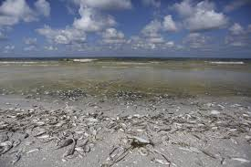
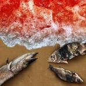

<!-- Emergency Page - Three Image Section Using New Component System -->
<section class="program-content">
    <div class="container">
        <div class="program-overview">
            <!-- Introduction paragraph - CUSTOMIZED FOR EMERGENCY PAGE -->
            <p class="intro-text">Ocean Aid 360's emergency response team is trained and equipped to address urgent environmental incidents that threaten marine ecosystems. Our rapid deployment capabilities allow us to be on site quickly when disasters strike.</p>
            
            <!-- Three images in a horizontal row -->
            <div class="three-image-grid">
                <div class="image-card">
                    
                </div>
                <div class="image-card">
                    
                </div>
                <div class="image-card">
                    
                </div>
            </div>
            
            <!-- Content section - CUSTOMIZED FOR EMERGENCY PAGE -->
            <div class="content-section">
                <h3>Our Emergency Response Capabilities</h3>
                <ul class="feature-list">
                    <li>Oil spill containment and cleanup operations</li>
                    <li>Red tide mitigation and monitoring</li>
                    <li>Post-storm debris removal and ecosystem assessment</li>
                    <li>Hazardous material management in marine environments</li>
                    <li>Coordination with government agencies during disasters</li>
                </ul>
                
                <p>Our team works closely with local, state, and federal agencies to ensure coordinated and effective response to environmental emergencies. Through training, preparation, and strategic partnerships, we stand ready to protect our marine ecosystems when they face sudden threats.</p>
                
                <div class="program-cta">
                    <a href="contact.html#emergency" class="btn btn-primary">Request Emergency Assistance</a>
                </div>
            </div>
        </div>
    </div>
</section>